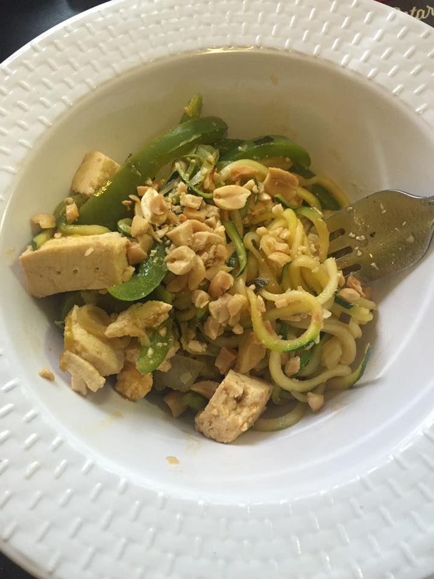

Plant-Based Cooking
November 12, 2016
To mark six months of adopting a plant-based diet I thought I would share my favorite Pad Thai Zoodle recipe.I’m a crispy-crunchy tofu-lover. To make sure they stay crispy-crunchy, you have to cook them separately and remove the tofu from the pan so that they don’t drown in the sauce or vegetables.Toss them in a little oil, add to hot pan, Brown on each side. This takes 1-2 minutes per side. But it’s worth the wait.
With a paper towel, wipe the wok clean. Swirl in just half of the remaining cooking oil and turn the heat to medium-high. When hot, add in the eggs and scramble. Remove the eggs to to the tofu plate and set aside Read More...
Uke, I Am Your Father
October 4, 2016
Lately, I've been obsessing over Netflix's Narcos television series. But more than that I've obssesed with the Narcos opening theme song. So of course, I had to learn to play it on the ukuele.

It's so fun to play, so I thought I would post a tutorial for it so that wherever you are you will be capable to pull out your ukuele and transform yourself to the Medellín in the 1980's. Read More...